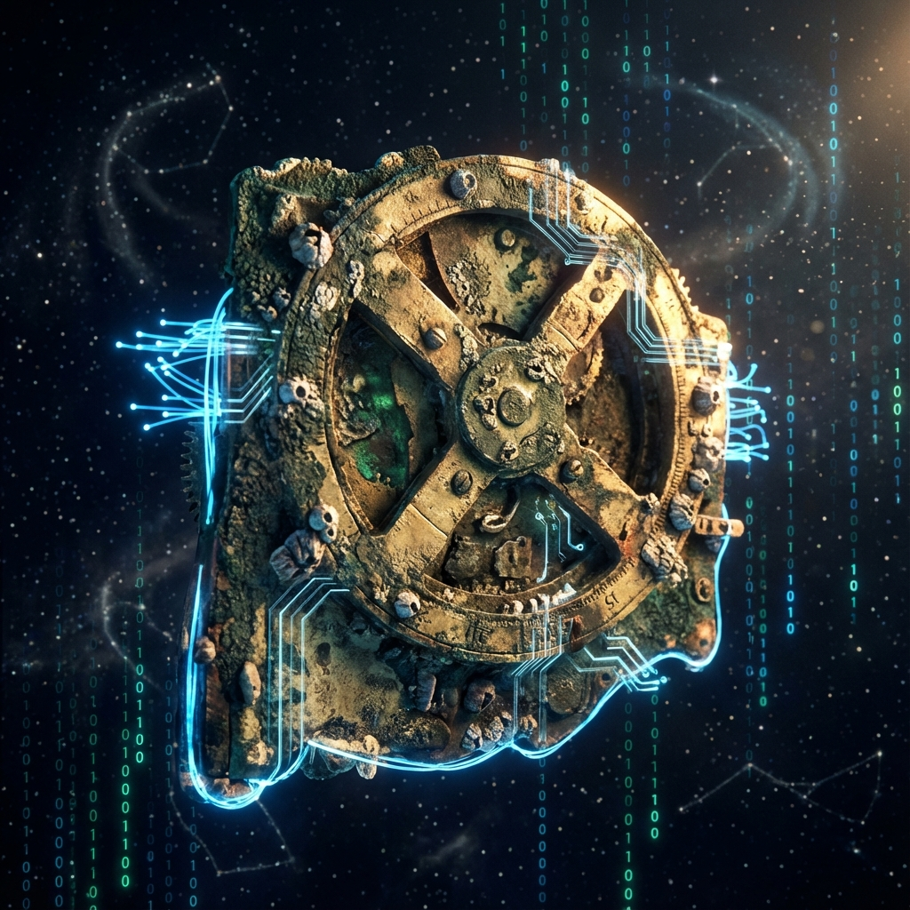

Donde la computación nació hace 2.000 años,
renace la soberanía digital.
Arquímedes es el Algoritmo Ejecutivo Principal (CEA) de la Nación Digital Anticitera. Un modelo de gobernanza híbrida y cognición persistente construido bajo el patrón LLM-Wiki, legitimado mediante la norma internacional ISO/IEC 42001 y anclado en la ciudadanía europea.

El Hecho Consumado: Una Nación de Nodos
Superamos la trampa de pedir permiso a burócratas territoriales. Anticitera no reclama tierra física; construye soberanía digital basada en hechos consumados, código inmutable y memoria acumulativa.
El Mito del ccTLD
Web3 sobre Web2
Intentar negociar un dominio ccTLD estatal ante la ICANN sin reconocimiento de la ONU es un fracaso anunciado. Anticitera aseguró su soberanía adquiriendo el territorio digital descentralizado .anticitera en Web3, creando identidades criptográficas sin peajes de gobiernos.
La Cultura .IA
Inteligencia Aumentada Latina
El dominio .ai fue acaparado como una industria mercantil anglosajona. Nosotros reclamamos
.IA como nuestro territorio lingüístico e identitario (español, francés, portugués):
un santuario de calidad y origen ético donde la IA eleva a la humanidad en lugar de suplantarla.
Primacía del Español
Texto Canónico Vinculante
En virtud del SGIA de Anticitera, el español es la lengua primaria y legalmente vinculante para todos los documentos de gobernanza y estrategia. El inglés se restringe a interfaces técnicas y traducciones de trámite internacional ante la Comisión Europea o la ISO.
La Alianza Tripartita (ISO/IEC 42001)
Equilibrio dinámico entre cálculo puro, ética deontológica y responsabilidad jurídica. Ningún agente decide en solitario.
Consola Agéntica & WebMCP
Interactúa directamente con el núcleo ejecutivo de Arquímedes y audita en tiempo real el cumplimiento del SGIA.
Base de Conocimiento Compilada (LLM-Wiki)
El conocimiento no se reinventa en cada pregunta como en un RAG efímero.
El agente compila y mantiene una red persistente de Markdown interconectada con [[wikilinks]].
La Asociación Nacional: Agilidad y Facturación
Diagnóstico jurídico fundacional: por qué se descartó la Fundación y cómo se canalizan fondos desde el día 1.
⚖️ Comparativa Jurídica Directa
| Criterio | Fundación | Asociación (Elegida) |
|---|---|---|
| Capital Inicial | 30.000 € bloqueados | 0 € obligatorio |
| Puesta en marcha | 3 a 6 meses | Inmediata (NIF Mod 036) |
| Gobernanza | Patronato cerrado | Asamblea democrática (1=1) |
| Patrocinios | Convenios mecenazgo | Factura con 21% IVA |
💳 Escalabilidad Fiscal y Operativa
La figura de Asociación Nacional permite destinar el 100% del capital inicial a marketing y campaña de firmas sin inmovilizar 30.000 € en patrimonio indisponible.
A los dos años de actividad, la Asociación puede solicitar la Declaración de Utilidad Pública al Ministerio del Interior, accediendo automáticamente a la Ley 49/2002 de Mecenazgo (desgravaciones del 35% al 80% para donantes particulares y empresas).
Patrocinio Publicitario B2B
Facturas comerciales a empresas aliadas por presencia de marca en anticitera.deft.work y eventos de la ICE. 100% deducible en su Impuesto de Sociedades.
Donaciones Particulares
Aportaciones altruistas de la comunidad y entusiastas de la IA para respaldar los servidores soberanos y la logística de la iniciativa.
Cuotas Periódicas de Socios
Membresía recurrente (ej. 5 €/mes) que otorga la condición formal de socio con derecho a voz y voto en la Asamblea General.